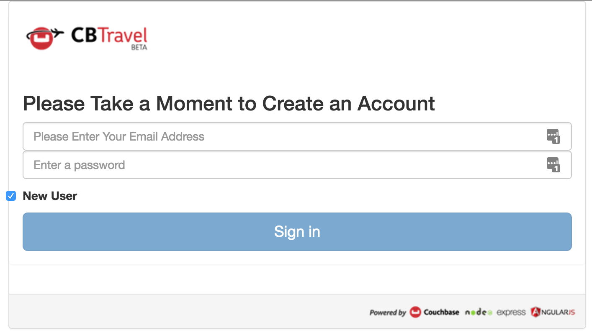
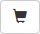
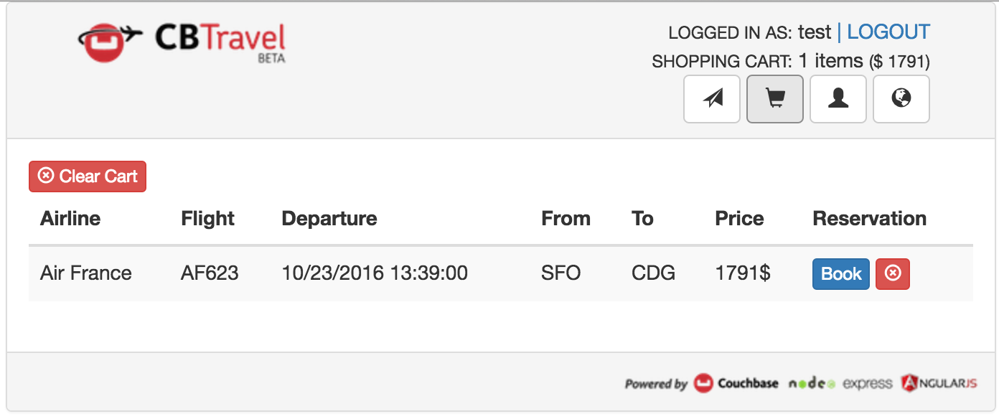

Sample Application
The Couchbase Travel App is a sample web application that demonstrates how to interact with the Couchbase query services via the SDKs.
Each SDK comes with its own implementation of the backend for the application. The backend is a REST API available in the following languages:
Please refer to the travel-app documentation of your SDK of choice for specifics for that particular SDK, like backend dependencies, source-code checkout, and running instructions.
The travel app front-end is the same in each SDK implementation and is built on an Angular2 stack.
While the app runs, you can get a peek of what is happening in the backend via the "Narration" — a console-like UI element that can display N1QL queries, for instance. It is only visible in components that communicate with the server, but can also be collapsed.
The application allows users to find flights by entering airports and travel dates. For the airport entries, the app uses a N1QL query bound to an Angular typeahead directive to suggest airport names based on the first few letters entered.
The focus of this tutorial is the backend. The documentation for the travel app illustrates the data model and walks through the N1QL and FTS queries used to select flights and search for hotels.
Generic set up
You’ll need:
-
Your favorite editor or IDE
-
Your SDK of choice and its specific dependencies
-
A local
Couchbase 5.1(or later) installation — make sure that thetravel-samplebucket has been loaded, and that there is at least one node with data, query, index, and full text search services in the cluster -
The sample app source code for your SDK from GitHub — check the instructions and make sure to use the implementation compatible with the v2 API
-
That’s it!
To start, it is easiest if you run Couchbase Server and the travel sample app on the same machine. It’s not required to run your development environment this way, and advanced Multi-Dimensional Scaling (MDS) configurations are supported. It’s just easier to start a development environment with components running locally.
If you do not already have Couchbase Server 5.1 or later installed, download Couchbase Server and install it.
When installed, open a browser and navigate to the Couchbase Web Console URL — by default, 127.0.0.1:8091.
When prompted, create a new cluster.
Make sure all the services (Data Service, Index Service, Search Service and Query Service) are selected.
It is important to install the travel-sample bucket from Couchbase Server 5.1 or later, as it has been enriched with hotels data.
If you have installed the sample bucket from an earlier version, delete the bucket and follow the instructions below.
|
If you have not installed the travel-sample bucket from Couchbase Server 5.1, select .
Select the travel-sample checkbox, and then click Load Sample Data.
The activity notification in the upper-right corner shows that the bucket is being added.
When the bucket is ready to use, it is listed under the Installed Samples heading.
In order to be able to search for hotels, you must create an FTS index on the travel-sample bucket.
Select and create an index named hotels.
| The index mapping could be better tuned, but a generic mapping will also work fine for this example. |
Finally, download the complete source code for the backend, then build and run the Travel App. See the links above for instructions for your development environment.
The app displays a message showing the login URL for the frontend. Make a note of this so you can log in.
Using the Travel App
To find and book a flight:
-
Open a browser and navigate to the login URL that was displayed when you started the app.
-
Sign in to Couchbase Travel by creating a new account, or providing existing credentials. (New accounts expire after some time depending on the backend used, usually 1 hour.)
 -
In the Airport or City section, enter an airport code or city name in the From and To fields.

-
In the Travel Dates section, enter Leave and Return dates in
MM/DD/YYYYformat. -
Click Find Flights. The app displays the available flights for the outbound and return legs of the trip.
-
Select one or more flights to add to your cart by clicking the Choose button next to each flight.

Now you have flights stored locally in your cart. You can see that the number of flights in the cart and the total cost are displayed in the navigation bar at the top right. To review your flights, navigate to the cart page:
-
Click on the cart icon in the navigation bar. 
-
Review the flights in your cart, and book one by clicking on the Book button next to it.

The flight is now booked, as confirmed by a message on the page.
The flights that you’ve booked are stored in the backend. The backend uses authentication to control access to the endpoints for booking and listing flights.
To see which flights you’ve booked, navigate to the user page:
-
Click on the user icon in the navigation bar.

To search for a hotel, navigate to the hotel page:
-
Click on the hotel icon to the right of the navigation bar.
-
Don’t enter any search criteria yet. Just click on the Find Hotels button. The first 100 hotels are displayed.
-
Now enter a keyword in the Description box, or a location in the Location box, and click on Find Hotels again to refine your search.

To use the hotel search, you must have created an FTS index named hotels, as described earlier.
The API backend that is used by the hotel page makes use of this FTS index.
|
The Travel App data model
The data model for the travel app uses several distinct document types: airline, route, airport, and hotel.
The model for each kind of document contains:
-
A key that acts as a primary key
-
An
idfield that identifies the document -
A
typefield that identifies the kind of document
The following figure illustrates the relationship between the different kinds of documents in version 5.1 of the Travel App. It shows the primary key, ID, and type fields that each document has, plus a few representative fields in each type of document.

Landmark documents are not used in the travel-sample application, which focuses on a more specific subset of point of interests that have their own type: hotels.
Hotels, like landmarks, don’t have relations to other types.
Airline documents
Airline documents contain details about airlines such as the name of the airline, International Air Transport Association (IATA) two-character airline designator, International Civil Aviation Organization (ICAO) three-character airline designator, and the airline call sign.
For airline documents, the value of the type field is airline.
airline_24 ←This is the key, which also acts as a primary key
{
"active": "Y",
"callsign": "AMERICAN",
"country": "United States",
"iata": "AA",
"icao": "AAL",
"id": "24",
"name": "American Airlines",
"type": "airline" ←This is the type identifier for the document
}Route documents
Route documents contain details about flights such as the name of the airline, departure airport, destination airport, number of stops during the flight, type of aircraft, flight number, and flight schedule.
Route documents also contain a foreign key identifier, airlineid, that is used to retrieve the document that contains information about the airline that flies the route.
The value of the airlineid field is identical to the key for the corresponding airline document.
For route documents, the value of the type field is route.
route_5966 ←This is the key, which also acts as a primary key
{
"id": "5966",
"type": "route", ←This is the type identifier for the document
"airline": "AA",
"airlineid": "airline_24", ←This is the foreign key identifier to an airline document
"sourceairport": "MCO",
"destinationairport": "SEA",
"stops": "0",
"equipment": "737",
"schedule": [
{"day": 1, "utc": "13:25:00", "flight": "AA788"},
{"day": 4, "utc": "13:25:00", "flight": "AA419"},
{"day": 5, "utc": "13:25:00", "flight": "AA519"}
]
}Airport documents
Airport documents contain details about airports such as name, location, time zone, ICAO four-character alphanumeric airport code, and Federal Aviation Administration (FAA) location identifier.
For airport documents, the value of the type field is airport.
airport_3577 ←This is the key, which also acts as a primary key
{
"travel-sample": {
"airportname": "Seattle Tacoma Intl",
"city": "Seattle",
"country": "United States",
"faa": "SEA",
"geo": {
"alt": 433,
"lat": 47.449,
"lon": -122.309306
},
"icao": "KSEA",
"id": 3577,
"type": "airport", ←This is the type identifier for the document
"tz": "America/Los_Angeles"
}
}Hotel documents
Hotel documents are all about a specific type of point of interests: hotels. They include information such as a name, description, location (coutry, state, city and address), price and services, and even customer reviews.
For hotel documents, the value of the type field is hotel.
hotel_10180 ←This is the key, which also acts as a primary key
{
"address": "8301 Hollister Ave",
"checkin": "12PM",
"checkout": "4PM",
"city": "Santa Barbara",
"country": "United States",
"description": "Located on 78 acres of oceanfront property, this resort is an upscale experience that caters to luxury travelers. There are 354 guest rooms in 19 separate villas, each in a Spanish style. Property amenities include saline infinity pools, a private beach, clay tennis courts, a 42,000 foot spa and fitness center, and nature trails through the adjoining wetland and forest. The onsite Miro restaurant provides great views of the coast with excellent food and service. With all that said, you pay for the experience, and this resort is not for the budget traveler. In addition to quoted rates there is a $25 per day resort fee that includes a bottle of wine in your room, two bottles of water, access to fitness center and spa, and internet access.",
"free_breakfast": true,
"free_internet": false,
"free_parking": false,
"geo": {
"accuracy": "ROOFTOP",
"lat": 34.43429,
"lon": -119.92137
},
"id": 10180,
"name": "Bacara Resort \u0026 Spa",
"pets_ok": false,
"price": "$300-$1000+",
"reviews": [
{
"author": "Orval Lebsack",
"content": "I stayed there with a friend for a girls trip around St. Patricks Day. This was my third time to NOLA, my first at Chateau Lemoyne. The location is excellent....very easy walking distance to everything, without the chaos of staying right on Bourbon Street. Even though its a Holiday Inn, it still has the historical feel and look of NOLA. The pool looked nice too, even though we never used it. The staff was friendly and helpful. Chateau Lemoyne would be hard to top, considering the price.",
"date": "2013-10-26 15:01:39 +0300",
"ratings": {
"Cleanliness": 5,
"Location": 5,
"Overall": 4,
"Rooms": 4,
"Service": 4,
"Sleep Quality": 5,
"Value": 4
}
}
],
"state": "California",
"type": "hotel", ←This is the type identifier for the document
"url": "http://www.bacararesort.com/",
"vacancy": true
}
}Architecture
The application serves an HTML file named index.html (in an src/app/ folder usually contained in a root folder dedicated to frontend files, e.g.
the public path in the Node.js application).
This file contains references to various included script files for front side JavaScript components such as Bootstrap and jQuery.
It also contains a small script snippet that bootstraps the Angular2 application, as well as an Angular loop ({{#each scripts.polyfills}}) to load polyfills (implementation of html5/web component elements that can be used as a backup if the browser doesn’t provide the corresponding feature natively).
Angular2 works in terms of Components, and the main component that gets displayed at bootstrap is in src/app/try.component.ts.
It is in charge of displaying the common elements of the single-page app, and defines Routes, determining which component to show depending on the URL.
The place at which said components are shown in the html is represented by a component tag provided by the angular Router: <router-outlet></router-outlet>.
The application is then split into several packages.
Each talks to a specific subset of the REST API provided by the backend.
Each package has a corresponding main Angular Component that provides the methods to interact with the API or perform work.
Their corresponding views then use these methods to populate data in the application.
The backend REST API, in its version associated with Couchbase Server 4.5 (version 2), can be found in the couchbaselabs/try-cb-frontend repository on GitHub.
The Home component
src/app/+home is the main page, dealing with flight searches.
In the backend, these searches are performed using N1QL queries.
It has three main methods:
-
Two at
getToAirportandgetFromAirportwhich are both REST API calls to the /api/airports REST endpoint -
And one at
findFlights, which is a REST API call to the /api/flightPaths/{to}/{from} endpoint
The application attempts to find an airport based on the codes used for the name (case sensitive), and codes for Federal Aviation Administration (FAA) or International Civil Aviation Organization (ICAO).
The backend method allows the user to search by FAA code, ICAO code or airport name.
It then prepares a N1QL query based on the selection criteria (using bucket information from its configuration).
The query is then sent to the Couchbase query service, all by using the backend’s associated SDK.
Using the data model, if you enter SEA, KSEA, or Seattle, the typeahead directive gives you the option to select Seattle Tacoma Intl. To see the results of the query, watch the terminal window in which the application is running.
The example is showing an output for the N1QL statements:
QUERY: SELECT airportname FROM `travel-sample` WHERE faa ='SEA'
QUERY: SELECT airportname FROM `travel-sample` WHERE icao ='KSEA'
QUERY: SELECT airportname FROM `travel-sample` WHERE airportname LIKE 'Seattle%'After the airports are selected and a leave date is entered, the application tries to find route and schedule information for an airline that services the requested flight path. The call to the REST API /api/flightPaths/{to}/{from} on the server is initiated when the user clicks the Find Flights button.
The elements in the form bind their controls to corresponding objects in the component, which allows to perform some validation checking among other things.
To learn more about forms and validation in Angular2, please refer to the official documentation.
The submit button calls the component’s findFlights() function, which in turn invokes the server REST API /api/flightPaths/{to}/{from}/ function either once for a one way flight or twice for a round-trip flight.
When it requests the return flight for a round trip, it just uses the reverse to and from sequence.
While to and from are made part of the URL, the API also expects an additional query parameter, leaves, that contains the requested travel date.
In the backend, the code corresponding to the flightPaths endpoint performs several important steps for processing the request to find flights:
-
It determines the FAA identifier for the
toandfromairports. -
It searches for routes and schedule information based on the source and destination airports and the requested dates. The collection of schedule documents is nested in the route document for each route. They are grouped by day of the week (1-7), and the requested dates are compared to the day of the week to see what flights are available on those particular dates. It returns a list of flights that includes data for the following fields: airline, flight, departure time ("utc" field), from, to, price (randomly assigned by the backend) and aircraft ("equipment" field).
The Query can be seen in the terminal window that is running the backend application:
QUERY:
SELECT a.name, s.flight, s.utc, r.sourceairport, r.destinationairport, r.equipment
FROM `travel-sample` r
UNNEST r.schedule s
JOIN `travel-sample` a
ON KEYS r.airlineid
WHERE r.sourceairport='SEA' AND r.destinationairport='MCO' AND s.day=6
ORDER BY a.nameN1QL query anatomy
The Couchbase Query API is a powerful tool for efficient retrieval of information from a document data store. In each SDK-specific travel application, queries about flights are created by a dedicated module (for example in Node.js, the flightPath.js module). Here’s an example of a query that finds flights between Seattle-Tacoma International Airport (SEA) and Orlando International Airport (MCO), followed by a description of what’s happening in the query:
SELECT a.name, s.flight, s.utc, r.sourceairport, r.destinationairport, r.equipment
FROM `travel-sample` r
UNNEST r.schedule s
JOIN `travel-sample` a ON KEYS r.airlineid
WHERE r.sourceairport='SEA' AND r.destinationairport='MCO' AND s.day=6
ORDER BY a.nameN1QL provides JOIN functionality, something previously not possible in a document database. For two documents to be joined in the result of a SELECT statement, one of them must contain a field whose value is equal to the Couchbase key of the other document. The following example shows two documents that demonstrate that requirement and a SELECT statement that joins them:
"keyA" is the Couchbase KV key for Doc A.
Doc A: { some fields }
Doc B: { some fields "joinField": "keyA" }
SELECT * FROM default b JOIN default a ON KEYS b.joinField
The data model for the travel application includes an airlineid field in each route document.
That airlineid field is used as a foreign key identifier and corresponds to the key for an airline document.
To select the airline name a.name, the query uses the following clause: JOIN `travel-sample` a ON KEYS r.airlineid.
One of the powerful features available in the N1QL query language is the ability to UNNEST or flatten, the results returned in the SELECT statement.
This is frequently needed when working with JSON documents, which may have rich heirarchies.
In the data model for the travel application, each route document contains a nested collection of schedule documents.
To alleviate a complicated JSON parsing code pattern for the return results, you can have the query execution UNNEST the schedule documents, so they become the root-level fields in the returned results.
Standard SQL syntax is used in the WHERE clause for the SELECT statement.
The result set is ordered by the a.name field, which contains the airline name.
Refer to the Querying with N1QL section for more information on using N1QL with the SDKs.
The Hotels component
src/app/+hotels allows to search for hotels.
In the backend these searches are performed using FTS queries, performed using the /api/hotel/ REST API endpoint.
The form is bound to the component using a FormBuilder, and it has two optional text inputs: a description and a location field.
When submitting the form, the component’s findHotels method is called with a JSON representation of the form’s content.
The findHotels method will use these values to determine if it should hit a more specific endpoint, in the case where a particular description keyword or location are requested by the form.
For instance, to search for a hotel in France with a description matching "golf" (in a full text search sense, possibly including alternative spellings, words with the same root, etc...), one should use the /api/hotel/France/golf endpoint. The possible endpoints are:
-
/api/hotel to find all hotels
-
/api/hotel/{description}/ to find all hotels matching a keyword/phrase in their name or description.
-
/api/hotel/{description}/{location}/ to find all hotels matching the keyword/phrase and a location keyword (in either of the location-related fields: country, city, state, address...)
-
/api/hotel/*/{location}/ to find all hotels within a location (not using keyword)
As a second step, for each hit returned by the FTS service the information that we want to display is collected by the backend using the subdocument API. This allows the client to request that the cluster to only transmit specific parts of the hotel document to be sent back to the client for display.
Refer to the Sub-Document Operations section for more information on using the Subdocument API with the SDKs.
Both parts of the request can be individually seen in the narration component:
FTS query anatomy
The Couchbase Search API (FTS) is a powerful tool for searching text inside a document data store. In each SDK-specific travel application, queries about hotels are created by a dedicated module (for example in Java, the Hotel service). Here’s an example of a query that finds hotels mentioning "golf" in France, followed by a description of what’s happening in the query:
{"query":{"conjuncts": [
{"field":"type","term":"hotel"},
{"disjuncts":[
{"field":"country","match_phrase":"France"},
{"field":"city","match_phrase":"France"},
{"field":"state","match_phrase":"France"},
{"field":"address","match_phrase":"France"}
]},
{"disjuncts":[
{"field":"description","match_phrase":"golf"},
{"field":"name","match_phrase":"golf"}
]}
]},
"size":100}The query is actually a composite (conjuncts) of 3 sub-queries: a term query and two disjuncts queries.
-
The term query matches a term as-is, without performing any analysis: it must match exactly what is stored in the index (which could be just the root of a word). Here we use it to restrict our search to the
hoteltype. -
A disjunction query matches if any of its sub-queries matches. We use the first only when there is a
locationprovided, to search for it in any of thecountry,city,stateandaddressfields. We use amatch phrasesub-query on each, which will attempt to find several keywords, analyzing them to remove stop words, include close results like words from the same root, etc... -
The second disjunction query is added whenever a description is provided for the search. It performs two match phrase queries on the description, respectively in the
nameandcontentfields of the landmark. -
There are quite a few other FTS query types. For instance, a match query is much like a match phrase query, except it only considers one term to search for, and can apply fuzzyness, e.g. to match close words with a slightly different spelling.
Finally, we notice that at the same level as the query entry there is also a size attribute.
This is one of the many tunings applicable to the whole query, a top-level parameter that limits the results to 100 hits.
Refer to the Full Text Search section for more information on using FTS with the SDKs.